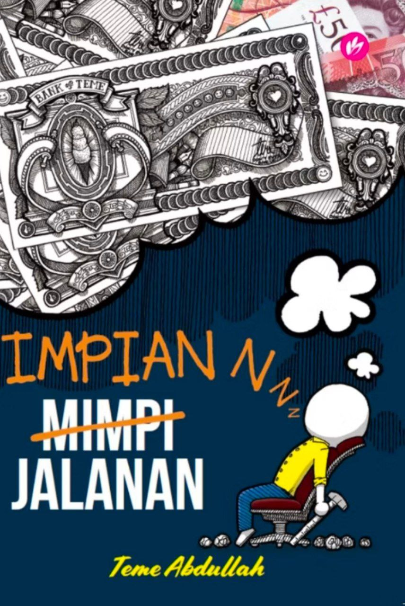
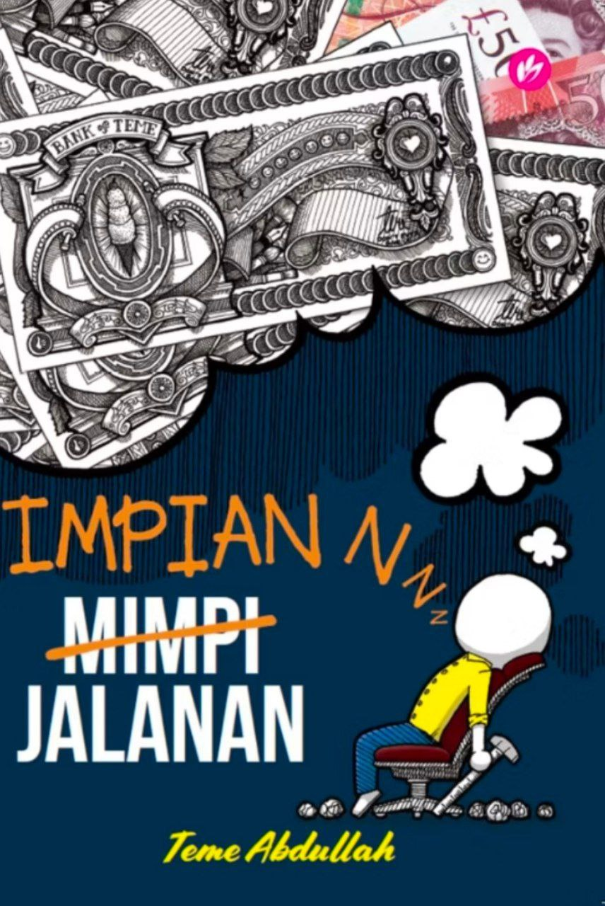

Reading Inspiratonal Novels
 

Reading novels is my favourite hobby. It is very relaxing and I love how I can interpret the protagonist and the characters with my own imaginations. Teme Abdullah is my favourite author and I had developed this hobby since the first book from Teme which is Pelukis Jalanan. He is an excellent auhtor that knows what the reader wants and write a really great plot. Plus, he knows how to keep the reader always curious and his novels will always be inspiring. He is a very good example that the young generation these days can follow. The figure above shows the best-selling book of Teme and I will recommend these book to every single human I know. I also hope that you check them out too!
Marathon-Watching Korean Dramas

My hobby of marathon-watching action Korean dramas is an exciting escape that I deeply enjoy. Action-packed Korean dramas offer a unique combination of thrilling plots, complex characters, and stunning visuals that captivate my attention. Shows like "Memorist" and "Descendants of the Sun" feature intense action scenes and intricate storylines that keep me on the edge of my seat, making it easy to lose track of time and fully immerse myself in their world. This hobby isn’t just about entertainment, it allows me to experience various cultural aspects of Korea, from the language and customs to the fashion and lifestyle. Watching these dramas has subtly enhanced my understanding of Korean culture and has even inspired me to learn basic Korean phrases. Additionally, action dramas often focus on themes of courage, loyalty, and resilience, which leave me feeling motivated and uplifted.